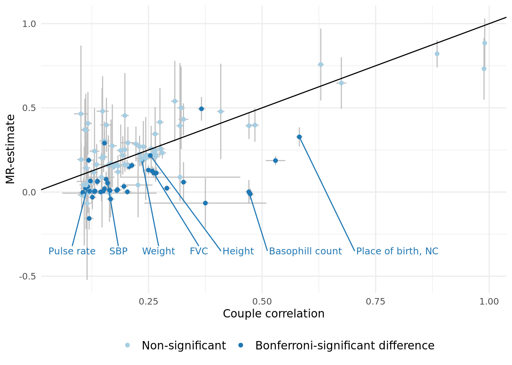
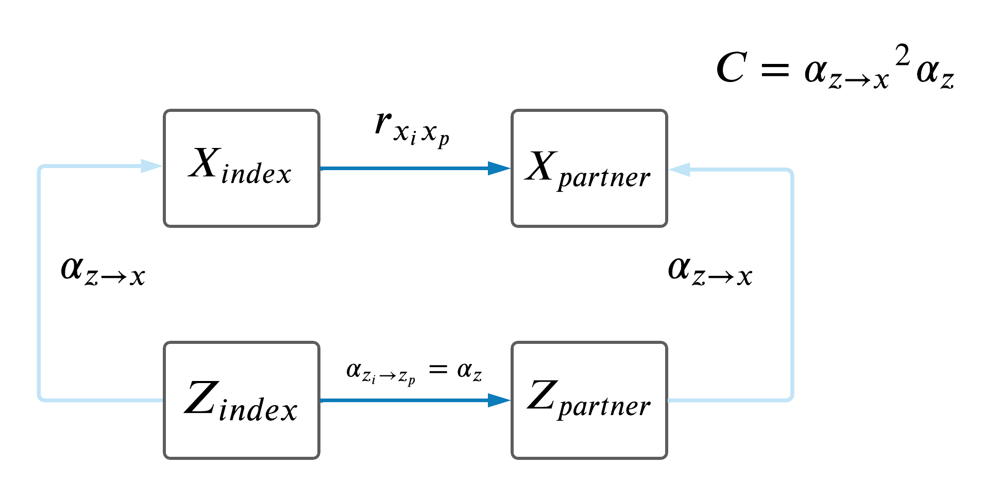

Manuscript
Jenny Sjaarda
2022-01-04
Last updated: 2022-03-28
Checks: 7 0
Knit directory: proxyMR/
This reproducible R Markdown analysis was created with workflowr (version 1.6.2). The Checks tab describes the reproducibility checks that were applied when the results were created. The Past versions tab lists the development history.
Great! Since the R Markdown file has been committed to the Git repository, you know the exact version of the code that produced these results.
Great job! The global environment was empty. Objects defined in the global environment can affect the analysis in your R Markdown file in unknown ways. For reproduciblity it's best to always run the code in an empty environment.
The command set.seed(20210602) was run prior to running the code in the R Markdown file. Setting a seed ensures that any results that rely on randomness, e.g. subsampling or permutations, are reproducible.
Great job! Recording the operating system, R version, and package versions is critical for reproducibility.
Nice! There were no cached chunks for this analysis, so you can be confident that you successfully produced the results during this run.
Great job! Using relative paths to the files within your workflowr project makes it easier to run your code on other machines.
Great! You are using Git for version control. Tracking code development and connecting the code version to the results is critical for reproducibility.
The results in this page were generated with repository version e11e2a3. See the Past versions tab to see a history of the changes made to the R Markdown and HTML files.
Note that you need to be careful to ensure that all relevant files for the analysis have been committed to Git prior to generating the results (you can use wflow_publish or wflow_git_commit). workflowr only checks the R Markdown file, but you know if there are other scripts or data files that it depends on. Below is the status of the Git repository when the results were generated:
Ignored files:
Ignored: .Rhistory
Ignored: .Rproj.user/
Ignored: _targets/
Ignored: analysis/_site.yml_cp
Ignored: analysis/bgenie_GWAS/
Ignored: analysis/data_setup/
Ignored: analysis/download_Neale_list.csv
Ignored: analysis/process_Neale.out
Ignored: analysis/traitMR/
Ignored: data/Neale_SGG_directory_11_02_2022.csv
Ignored: data/Neale_SGG_directory_12_07_2021.csv
Ignored: data/Neale_SGG_directory_15_07_2021.csv
Ignored: data/PHESANT_file_directory_05_10_2021.txt
Ignored: data/UKBB_pheno_directory_05_10_2021.csv
Ignored: data/processed/
Ignored: data/raw/
Ignored: output/figures/
Ignored: output/tables/traitMR/
Ignored: proxyMR_comparison.RData
Ignored: proxyMR_figure_data.RData
Ignored: proxymr_100_clustermq.out
Ignored: proxymr_101_clustermq.out
Ignored: proxymr_102_clustermq.out
Ignored: proxymr_103_clustermq.out
Ignored: proxymr_104_clustermq.out
Ignored: proxymr_105_clustermq.out
Ignored: proxymr_106_clustermq.out
Ignored: proxymr_107_clustermq.out
Ignored: proxymr_108_clustermq.out
Ignored: proxymr_109_clustermq.out
Ignored: proxymr_10_clustermq.out
Ignored: proxymr_110_clustermq.out
Ignored: proxymr_111_clustermq.out
Ignored: proxymr_112_clustermq.out
Ignored: proxymr_113_clustermq.out
Ignored: proxymr_114_clustermq.out
Ignored: proxymr_115_clustermq.out
Ignored: proxymr_116_clustermq.out
Ignored: proxymr_117_clustermq.out
Ignored: proxymr_118_clustermq.out
Ignored: proxymr_119_clustermq.out
Ignored: proxymr_11_clustermq.out
Ignored: proxymr_120_clustermq.out
Ignored: proxymr_121_clustermq.out
Ignored: proxymr_122_clustermq.out
Ignored: proxymr_123_clustermq.out
Ignored: proxymr_124_clustermq.out
Ignored: proxymr_125_clustermq.out
Ignored: proxymr_126_clustermq.out
Ignored: proxymr_127_clustermq.out
Ignored: proxymr_128_clustermq.out
Ignored: proxymr_129_clustermq.out
Ignored: proxymr_12_clustermq.out
Ignored: proxymr_130_clustermq.out
Ignored: proxymr_131_clustermq.out
Ignored: proxymr_132_clustermq.out
Ignored: proxymr_133_clustermq.out
Ignored: proxymr_134_clustermq.out
Ignored: proxymr_135_clustermq.out
Ignored: proxymr_136_clustermq.out
Ignored: proxymr_137_clustermq.out
Ignored: proxymr_138_clustermq.out
Ignored: proxymr_139_clustermq.out
Ignored: proxymr_13_clustermq.out
Ignored: proxymr_140_clustermq.out
Ignored: proxymr_14_clustermq.out
Ignored: proxymr_15_clustermq.out
Ignored: proxymr_16_clustermq.out
Ignored: proxymr_17_clustermq.out
Ignored: proxymr_18_clustermq.out
Ignored: proxymr_19_clustermq.out
Ignored: proxymr_1_clustermq.out
Ignored: proxymr_20_clustermq.out
Ignored: proxymr_21_clustermq.out
Ignored: proxymr_22_clustermq.out
Ignored: proxymr_23_clustermq.out
Ignored: proxymr_24_clustermq.out
Ignored: proxymr_25_clustermq.out
Ignored: proxymr_26_clustermq.out
Ignored: proxymr_27_clustermq.out
Ignored: proxymr_28_clustermq.out
Ignored: proxymr_29_clustermq.out
Ignored: proxymr_2_clustermq.out
Ignored: proxymr_30_clustermq.out
Ignored: proxymr_31_clustermq.out
Ignored: proxymr_32_clustermq.out
Ignored: proxymr_33_clustermq.out
Ignored: proxymr_34_clustermq.out
Ignored: proxymr_35_clustermq.out
Ignored: proxymr_36_clustermq.out
Ignored: proxymr_37_clustermq.out
Ignored: proxymr_38_clustermq.out
Ignored: proxymr_39_clustermq.out
Ignored: proxymr_3_clustermq.out
Ignored: proxymr_40_clustermq.out
Ignored: proxymr_41_clustermq.out
Ignored: proxymr_42_clustermq.out
Ignored: proxymr_43_clustermq.out
Ignored: proxymr_44_clustermq.out
Ignored: proxymr_45_clustermq.out
Ignored: proxymr_46_clustermq.out
Ignored: proxymr_47_clustermq.out
Ignored: proxymr_48_clustermq.out
Ignored: proxymr_49_clustermq.out
Ignored: proxymr_4_clustermq.out
Ignored: proxymr_50_clustermq.out
Ignored: proxymr_51_clustermq.out
Ignored: proxymr_52_clustermq.out
Ignored: proxymr_53_clustermq.out
Ignored: proxymr_54_clustermq.out
Ignored: proxymr_55_clustermq.out
Ignored: proxymr_56_clustermq.out
Ignored: proxymr_57_clustermq.out
Ignored: proxymr_58_clustermq.out
Ignored: proxymr_59_clustermq.out
Ignored: proxymr_5_clustermq.out
Ignored: proxymr_60_clustermq.out
Ignored: proxymr_61_clustermq.out
Ignored: proxymr_62_clustermq.out
Ignored: proxymr_63_clustermq.out
Ignored: proxymr_64_clustermq.out
Ignored: proxymr_65_clustermq.out
Ignored: proxymr_66_clustermq.out
Ignored: proxymr_67_clustermq.out
Ignored: proxymr_68_clustermq.out
Ignored: proxymr_69_clustermq.out
Ignored: proxymr_6_clustermq.out
Ignored: proxymr_70_clustermq.out
Ignored: proxymr_71_clustermq.out
Ignored: proxymr_72_clustermq.out
Ignored: proxymr_73_clustermq.out
Ignored: proxymr_74_clustermq.out
Ignored: proxymr_75_clustermq.out
Ignored: proxymr_76_clustermq.out
Ignored: proxymr_77_clustermq.out
Ignored: proxymr_78_clustermq.out
Ignored: proxymr_79_clustermq.out
Ignored: proxymr_7_clustermq.out
Ignored: proxymr_80_clustermq.out
Ignored: proxymr_81_clustermq.out
Ignored: proxymr_82_clustermq.out
Ignored: proxymr_83_clustermq.out
Ignored: proxymr_84_clustermq.out
Ignored: proxymr_85_clustermq.out
Ignored: proxymr_86_clustermq.out
Ignored: proxymr_87_clustermq.out
Ignored: proxymr_88_clustermq.out
Ignored: proxymr_89_clustermq.out
Ignored: proxymr_8_clustermq.out
Ignored: proxymr_90_clustermq.out
Ignored: proxymr_91_clustermq.out
Ignored: proxymr_92_clustermq.out
Ignored: proxymr_93_clustermq.out
Ignored: proxymr_94_clustermq.out
Ignored: proxymr_95_clustermq.out
Ignored: proxymr_96_clustermq.out
Ignored: proxymr_97_clustermq.out
Ignored: proxymr_98_clustermq.out
Ignored: proxymr_99_clustermq.out
Ignored: proxymr_9_clustermq.out
Ignored: renv/library/
Ignored: renv/staging/
Untracked files:
Untracked: Rplots.pdf
Unstaged changes:
Modified: analysis/AM_MR_summary.Rmd
Modified: output/tables/household_correlations.final_filter.csv
Modified: renv.lock
Note that any generated files, e.g. HTML, png, CSS, etc., are not included in this status report because it is ok for generated content to have uncommitted changes.
These are the previous versions of the repository in which changes were made to the R Markdown (analysis/manuscript.Rmd) and HTML (docs/manuscript.html) files. If you've configured a remote Git repository (see ?wflow_git_remote), click on the hyperlinks in the table below to view the files as they were in that past version.
| File | Version | Author | Date | Message |
|---|---|---|---|---|
| Rmd | e11e2a3 | Jenny Sjaarda | 2022-03-28 | wflow_publish("analysis/manuscript.Rmd") |
| html | d2a6d86 | Jenny Sjaarda | 2022-03-28 | Build site. |
| Rmd | dc19f84 | Jenny Sjaarda | 2022-03-28 | wflow_publish("analysis/manuscript.Rmd") |
| html | 79aa262 | Jenny Sjaarda | 2022-03-07 | Build site. |
| Rmd | 3c6390a | Jenny Sjaarda | 2022-03-07 | wflow_publish("analysis/manuscript.Rmd") |
| html | 69df448 | Jenny Sjaarda | 2022-02-06 | Build site. |
| Rmd | 95bef3a | Jenny Sjaarda | 2022-02-06 | wflow_publish("analysis/manuscript.Rmd") |
| html | 5ff8a6e | Jenny Sjaarda | 2022-02-03 | Build site. |
| Rmd | f1d1875 | Jenny Sjaarda | 2022-02-03 | wflow_publish("analysis/manuscript.Rmd") |
| html | a22389b | Jenny Sjaarda | 2022-02-03 | Build site. |
| Rmd | 1b532d0 | Jenny Sjaarda | 2022-02-03 | wflow_publish("analysis/manuscript.Rmd") |
| html | 94fcedd | Jenny Sjaarda | 2022-02-03 | Build site. |
| Rmd | 62bc725 | Jenny Sjaarda | 2022-02-03 | wflow_publish("analysis/manuscript.Rmd") |
| html | e3cbe36 | Jenny Sjaarda | 2022-02-03 | Build site. |
| Rmd | 7d6d0ca | Jenny Sjaarda | 2022-02-03 | wflow_publish("analysis/manuscript.Rmd") |
| Rmd | afccbb8 | jennysjaarda | 2022-01-12 | create a manuscript Rmd with figures |
1 A few notes (for myself).
- The number of effective tests can be found at the target
num_tests_by_PCs. - The number of effective tests among those significant in the MR can be found at the target
num_tests_by_PCs_AM_sig.
2 Pearson vs. Spearman correlation.
We wanted to ensure that INQT was not significantly impacting the correaltions of each trait, so we also calculated a non-parametric based correaltion (Spearman) and found consistent correlations.
| Version | Author | Date |
|---|---|---|
| 79aa262 | Jenny Sjaarda | 2022-03-07 |
3 Relationship between causal effects and raw phenotypic correlation in couples.
We sought to compare the raw correlation amongst couples vs. the standardized MR effects. There are many traits where the correlation > MR effects including some traits of interest such as standing height, place of birth, among many others.
For example, if we take a trait such as place of birth (NC), this is very highly correlated among couples. However, the within-couple MR-estimate is smaller than the observed phenotypic correaltion. This is the case for many such traits.
| Version | Author | Date |
|---|---|---|
| 79aa262 | Jenny Sjaarda | 2022-03-07 |
3.1 Summary of cases where correlation is different from the MR estimate.
A plot comparing the two effects, and a summary table of the significant effects is shown below.

The table below displays the 43 traits that have correlation significantly different from the MR-estimate. Of the significant difference 3 have MR-estimates larger than than correlation, suggesting the presence of a negative confounder (this table corresponds to "sig_corr_vs_MR" in the excel document).
3.2 Search for potential confounders to explain cases where correlation differs from MR estimate.
Sought to identify potential confounders (from our list of traits in the pipeline) which may, in part, explain the discrepant estimates, as follows:
- Restrict to only traits that have correlation significantly different from MR-estimate (43 traits have correlation different from MR_estimate).
- Remove any
potential_counderswith correlation withtrait_ID> 0.8. - For each of the remaining \(Z\)
potential_coundersfor each trait \(X\), find the potential confounders which have a causal effect on trait \(X\) (\(\alpha_{z\rightarrow x}\) p-val < 0.05/[number of effective tests]). - Split results into those cases where MR-estimate is greater than the phenotypic correlation and those that are less than the correlation.
- For traits where correlation was less than MR-estimate, we restricted to negative confounders (i.e. negative \(\alpha_{z_i\rightarrow z_p}\)), and conversely for traits where the correlation was greater than the MR-estimate we restricted to positive confounders (i.e. positive \(\alpha_{z_i\rightarrow z_p}\)) [note that only one significant MR-effect is negative].
- Of the remaining \(Z\), we further filtered to those with a significant within couple MR effect (\(\alpha_{z_i\rightarrow z_p}\) p < 0.05/[number of remaining \(Z\)]).
- Calculate the correlation due to confounding as: \(C = (\alpha_{z\rightarrow x})^2 * \alpha_{z_i\rightarrow z_p}\).
- Calculate the ratio of this correlation (\(C\)) and the correlation of \(X\) in partners (\(C/r_x\)).
- For each
trait_IDprune remainingpotential_coundersso that all have correlations < 0.8, prioritized by theircorr_due_to_confounding_ratio.

| Version | Author | Date |
|---|---|---|
| 139ef14 | jennysjaarda | 2022-03-06 |
A summary of the top 5 confounders for each trait_ID can be seen below (a variation of this table, include all potential confounders is included in the excel sheet titled "sig_confounders"):
We compared the difference in phenotypic estimate and MR-estimates to the maximum C for each trait, as shown in the figure below:

Lastly, we attempted to compute a MVMR sum of the effects of all potential confounders as shown in the DAG below and compared these C-statistics to the difference between phenotypic correlation and MR-estimates, however the estimates did not make sense so we decided not to pursue this analysis.
| Version | Author | Date |
|---|---|---|
| 89a7342 | jennysjaarda | 2022-02-27 |
4 Single-trait causal effects in couples.
- For each trait in the pipeline, we tested the causal effect within couples (i.e. the number of analyses corresponds to the number of traits (118)).
- The significant results after adjusting for multiple hypothesis testing are shown below.
IVW_meta_betaandIVW_meta_pvalcorresponds to the beta and p-value of the meta-analyzed MR across sexes, respectively (i.e. MR estimates were computed in each sex-seperately using sex-specific SNP-exposure and SNP-outcome results and then meta-analyzed).- After adjusting for multiple tests (p <
0.05/66), identified 64 significant assortative mating (same-trait) MR results (corresponding to the table below and table "BF_sig_same_trait_MR" in the excel document).
4.1 Heterogeneity stats.
- In the single trait analysis, we also decided to investigate Cochran’s heterogeneity Q-stat to identify traits with high heterogeneity.
- This would indicate that associations between the index genotype and partner’s phenotype may not only act indirectly through causal relationship between the traits, but some direct effect is present.
- Ideally, for the majority of the traits, the heterogeneity would be low, confirming that (despite what Tenesa suggests) there are no direct index genome to partner phenome effects.
- We tested heterogeneity statistics using the function mr_heterogeneity from the TwoSampleMR package.
The number of traits with significant heterogeneity in the MR is: 0.
4.2 Sensitivity follow-up.
Of those traits that had a significant causal-effect among couples by IVW, we tested the MR weighted-mode and MR weighted-median method for consistent findings.
- We found 19 trait(s) which was/were not significant using the weighted-mode approach (p > 0.05).
- We found 1 trait(s) which was/were not significant using the weighted-mode approach (p > 0.05).
Results can be seen in the table below.
5 Effect of sex, age and time together on causal effects in couples.
5.1 Sex heterogeneity.
- For each AM MR (\(X_{p} \sim X_i\)), analyses were run in each sex separately.
- Of the significant results shown above, we tested to see if there was any difference in AM MR estimates between sexes.
- A similar adjustment for multiple hypothesis testing was applied as above, resulting in 29 number of effective tests.
- After adjusting for multiple hypothesis testing (p <
0.05/29), 0 traits showed significant differences amongst sexes. - The table below shows the nominally significant results at
p < 0.05(of which there are 15) (a slight variation of this table corresponds to "nominally_sig_sex_diff" in the excel document). - The \(p_{binomial}\) can be calculated as
1 – pbinom(15, 64, 0.05), and the fold enrichment as15/(64*0.05). - Found that female estimates are on average larger than males (result of the paired t-test shown below).
Paired t-test
data: nominally_sig_sex_differences$IVW_beta_male and nominally_sig_sex_differences$IVW_beta_female
t = -2.8203, df = 14, p-value = 0.01362
alternative hypothesis: true difference in means is not equal to 0
95 percent confidence interval:
-0.20384885 -0.02773588
sample estimates:
mean of the differences
-0.1157924 5.2 MR binned results (exploring effect of age and time-together).
- For each AM MR (\(X_{p} \sim X_i\)), analyses were run in the full sample as well as in 5 roughly equal sized bins according to time couple had been together (
time_together_even_bins) estimated using time at household variable, and median age (age_even_bins). - Of the 64 significant results shown above, we tested to see if there was any significant difference in AM MR estimates amongst the two grouping variables.
- Specifically, the outcome data set was split into 5 bins, and the SNP-outcome effect was estimated in each bin separately (and each sex seperately).
- These outcome-SNP effects were then used to generate bin-specific MR estimates, using the same SNP-exposure effects from Neale.
- To estimate the difference among bins, we used two approaches:
- The Cochran's Q test to test for heterogeneity in meta-analyses (of which we obtained no significant results, so not presented in paper).
- Tested the significance of the slope of linear model of median bin (either
ageortime together) versus the bin-specific MR estimate.
Slopes were calculated by estimating the beta-coefficient of a linear regression between MR estimate within each bin (dependent variable) and median bin (independent variable, either age or time at same household). Linear models were run both unweighted and weighted for the by the inverse of the SE of the MR estimate.
The number of significant trends (\(\beta\) estimates from the model: \(\alpha_{bin} \sim median_{bin}\)) significant after multiple hypothesis testing (p < 0.05/29 = 0.0017241) in each group was:
- Binned by median age of couples, number of significant results after adjusting for number of tests:
- \(\beta\) unweighted, meta-anlayzed across sexes: 0
- \(\beta\) weighted by inverse of the SE, meta-anlayzed across sexes: 0
- \(\beta\) unweighted, significantly different between sexes: 1
- \(\beta\) weighted by inverse of the SE, significantly different between sexes: 1
- Binned by time couple had been together, number of significant results after adjusting for number of tests:
- \(\beta\) unweighted, meta-anlayzed across sexes: 0
- \(\beta\) weighted by inverse of the SE, meta-anlayzed across sexes: 0
- \(\beta\) unweighted, significantly different between sexes: 1.
- \(\beta\) weighted by inverse of the SE, significantly different between sexes: 0
The significant traits correspond to the following traits:
A few potential figures we could include for a given trait are shown below.


5.3 Phenotypic binned results (exploring effect of age and time-together).
We also tested the phenotypic correlation among the different bins. Below are the traits that show a significant trend either with Pearson correlation (p < 0.0007576) (the table below corresponds to "pheno_binned_corrs" in the excel document).

| Version | Author | Date |
|---|---|---|
| d2a6d86 | Jenny Sjaarda | 2022-03-28 |
6 Impact of confounders on couple correlation.
We tested the impact of confounding on genetic PCs, N/E coordinates and the following traits (however only presenting a selection in paper):
| 738 | Average total household income before tax |
| 845 | Age completed full time education |
| 189_irnt | Townsend deprivation index at recruitment |
| 20016_irnt | Fluid intelligence score |
| 6160_1 | Leisure/social activities: Sports club or gym |
| 6147_1 | Reason for glasses/contact lenses: For short-sightedness, i.e. only or mainly for distance viewing such as driving, cinema etc (called 'myopia') |
| 1180 | Morning/evening person (chronotype) |
| 129_irnt | Place of birth in UK - north co-ordinate |
| 130_irnt | Place of birth in UK - east co-ordinate |
6.1 Ratio of confounding to correlation.
We tested the ratio of confounding to correlation for each confounder trait tested.
| confounder_trait | confounder_trait_ID | mean_ratio | median_ratio | sd_ratio | number_of_traits |
|---|---|---|---|---|---|
| Fluid intelligence score | 20016_irnt | 0.0315850 | 0.0124125 | 0.0866104 | 117 |
| Leisure/social activities: Sports club or gym | 6160_1 | 0.1711413 | 0.0975948 | 0.2159614 | 117 |
| Average total household income before tax | 738 | 0.2981224 | 0.1838665 | 0.3874903 | 117 |
| Age completed full time education | 845 | 0.1163374 | 0.0624820 | 0.1771514 | 117 |
A note on the number of traits:
We tested the impact of trait_interest on couple correlation amongst all traits in our couple MR framework (number of traits = 118) with the exception of birth place coordinates (2 each [N and E]), we also removed the trait itself from the confounder analysis where applicable (in the case of traits 20016_irnt, 738 and 845). [Trait 189_irnt was not included in our final couple MR analysis but could still be evaluated here because no MR-estimates were used.]
6.2 Plots.
The figure below shows the 4 traits which showed the greatest impact on couple correlation (mean confounding ratio > 0.01).

| Version | Author | Date |
|---|---|---|
| d2a6d86 | Jenny Sjaarda | 2022-03-28 |
7 Comparison of paths from index to partner.
As a recap, the model is below.

| Version | Author | Date |
|---|---|---|
| 529020f | jennysjaarda | 2021-09-24 |
We sought to compare the different paths from \(X_i\) to \(Y_p\) using the estimates computed as \(\omega\), \(\rho\) and \(\gamma\).
We considered the regression of the following estimates vs \(\omega\) with an intercept passing through the origin (i.e. \(estimate \sim \omega + 0\):
- \(\rho\)
- \(\gamma\)
- \(\rho\) + \(\gamma\)
- \(\rho_{resid} + \gamma\), where \(\rho\) is residualized for \(\gamma\) (i.e. \(\rho_{resid} = resid(lm(\rho \sim \gamma))\))
The results are summarized below (and provided in table "omega_regression_estimates" in the excel document):
| outcome | term | estimate | std.error | statistic | p.value | r.squared |
|---|---|---|---|---|---|---|
| rho | omega | 0.5939414 | 0.0131690 | 45.10154 | 0 | 0.6517308 |
| gam | omega | 0.6175746 | 0.0101138 | 61.06271 | 0 | 0.7742779 |
| gam_rho_resid | omega | 0.7691667 | 0.0132175 | 58.19301 | 0 | 0.7570095 |
To further explore these estimates, performed paired t-tests to find the significant differences between pairs of estimates. We first removed all instances where the sign did not match between any two pairings. In total, of the 1088 trait pairs under consideration, 19 were removed.
Pairwise comparisons using paired t tests
data: data_boxplot$beta and data_boxplot$data
Rho Gamma Gamma_Rho_resid
Gamma 0.0000112 - -
Gamma_Rho_resid < 0.0000000000000002 0.63 -
Omega 0.0000001 0.27 0.50
P value adjustment method: none
| Version | Author | Date |
|---|---|---|
| d2a6d86 | Jenny Sjaarda | 2022-03-28 |
7.1 Paths summary.
A summary of the \(\omega\), \(\rho\), \(\gamma\) and \(\rho_{resid} + \gamma\) estimates are summarized in the table below. The differences between the estimates (according to a Z-test) are given in the last three columns. Trait pairs were pruned such that: if there is a pair A-B and C-D and if [max(corr(A,C)*corr(B,D),corr(A,D)*corr(B,C))] > 0.8 then one pair is dropped. Pairs were prioritized based on the \(\omega\) p-value (this table corresponds to "paths_summary" in the excel document).
sessionInfo()R version 4.1.0 (2021-05-18)
Platform: x86_64-pc-linux-gnu (64-bit)
Running under: CentOS Linux 7 (Core)
Matrix products: default
BLAS: /data/sgg2/jenny/bin/R-4.1.0/lib64/R/lib/libRblas.so
LAPACK: /data/sgg2/jenny/bin/R-4.1.0/lib64/R/lib/libRlapack.so
locale:
[1] en_CA.UTF-8
attached base packages:
[1] stats graphics grDevices datasets utils methods base
other attached packages:
[1] xlsx_0.6.5 data.table_1.14.0 broom_0.7.7 ggpubr_0.4.0
[5] hrbrthemes_0.8.0 viridis_0.6.1 viridisLite_0.4.0 ggrepel_0.9.1
[9] plyr_1.8.6 plotly_4.9.4.1 cowplot_1.1.1 knitr_1.33
[13] DT_0.18.1 kableExtra_1.3.4 forcats_0.5.1 stringr_1.4.0
[17] dplyr_1.0.7 purrr_0.3.4 readr_1.4.0 tidyr_1.1.3
[21] tibble_3.1.2 ggplot2_3.3.4 tidyverse_1.3.1 targets_0.5.0.9001
[25] workflowr_1.6.2
loaded via a namespace (and not attached):
[1] colorspace_2.0-1 ggsignif_0.6.3 ellipsis_0.3.2 rio_0.5.27
[5] rprojroot_2.0.2 fs_1.5.0 rstudioapi_0.13 farver_2.1.0
[9] fansi_0.5.0 lubridate_1.7.10 xml2_1.3.2 splines_4.1.0
[13] codetools_0.2-18 extrafont_0.17 jsonlite_1.7.2 rJava_1.0-6
[17] Rttf2pt1_1.3.9 dbplyr_2.1.1 compiler_4.1.0 httr_1.4.2
[21] backports_1.2.1 Matrix_1.3-3 assertthat_0.2.1 fastmap_1.1.0
[25] lazyeval_0.2.2 cli_2.5.0 later_1.2.0 htmltools_0.5.2
[29] tools_4.1.0 igraph_1.2.6 gtable_0.3.0 glue_1.4.2
[33] Rcpp_1.0.6 carData_3.0-4 cellranger_1.1.0 jquerylib_0.1.4
[37] vctrs_0.3.8 nlme_3.1-152 svglite_2.0.0 extrafontdb_1.0
[41] crosstalk_1.1.1 xfun_0.24 ps_1.6.0 xlsxjars_0.6.1
[45] openxlsx_4.2.4 rvest_1.0.0 lifecycle_1.0.0 renv_0.13.2-62
[49] rstatix_0.7.0 scales_1.1.1 hms_1.1.0 promises_1.2.0.1
[53] yaml_2.2.1 curl_4.3.2 gridExtra_2.3 gdtools_0.2.3
[57] sass_0.4.0 stringi_1.6.2 highr_0.9 zip_2.2.0
[61] rlang_0.4.11 pkgconfig_2.0.3 systemfonts_1.0.2 lattice_0.20-44
[65] evaluate_0.14 htmlwidgets_1.5.3 labeling_0.4.2 processx_3.5.2
[69] tidyselect_1.1.1 magrittr_2.0.1 R6_2.5.0 generics_0.1.0
[73] DBI_1.1.1 pillar_1.6.1 haven_2.4.1 whisker_0.4
[77] foreign_0.8-81 withr_2.4.2 mgcv_1.8-35 abind_1.4-5
[81] modelr_0.1.8 crayon_1.4.1 car_3.0-10 utf8_1.2.1
[85] rmarkdown_2.11.2 grid_4.1.0 readxl_1.3.1 callr_3.7.0
[89] git2r_0.28.0 reprex_2.0.0 digest_0.6.27 webshot_0.5.2
[93] httpuv_1.6.1 munsell_0.5.0 bslib_0.3.0